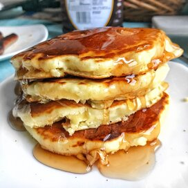

Pancake recipe

Description
Perfect for breakfast
Ingredients
- 1(1/2) cups all-purpose flour
- 3(1/2) teaspoons baking powder
- 1/2 teaspoon salt, or more to taste
- 1 tablespoon white sugar
- 1(1/4)cups milk
- 1 egg
- 3 tablespoon butter melted
Steps
-
In a large bowl, sift together the flour, baking powder, salt and sugar.
Make a well in the center and pour in the milk, egg and melted butter; mix until smooth.
-
Heat a lightly oiled griddle or frying pan over medium-high heat.
Pour or scoop the batter onto the griddle, using approximately 1/4 cup for each pancake.
Brown on both sides and serve hot.